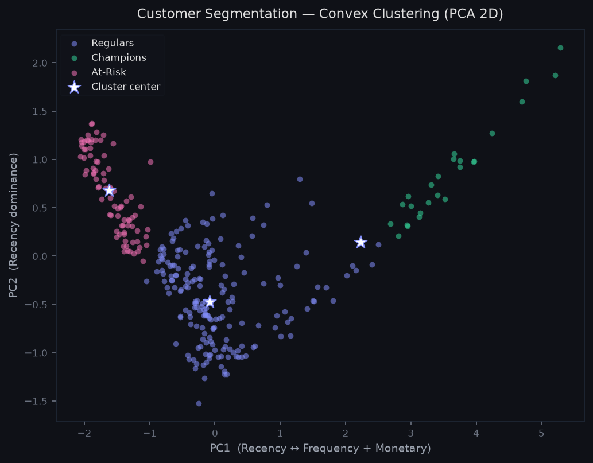
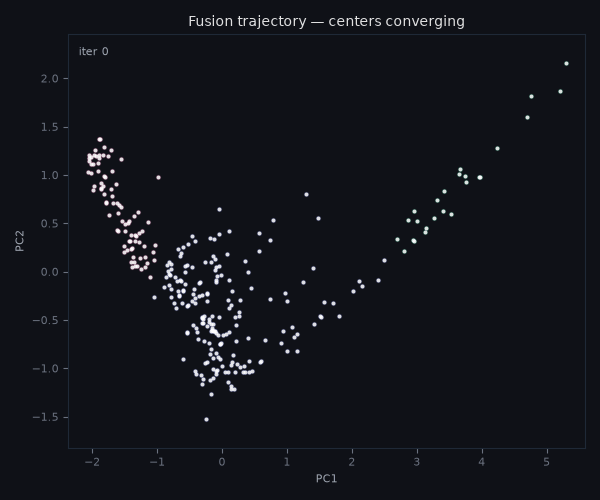

Customer Segmentation via RFM Analysis¶
Convex clustering applied to a real-world business problem: segmenting customers by purchasing behavior using RFM features — Recency (days since last purchase), Frequency (number of orders), and Monetary value (total spend in GBP).
The dataset is derived from the Online Retail Dataset (UCI, 2010–2011), a transactional record of a UK-based online retailer with ~500,000 invoices and 4,338 unique customers after cleaning.
Why convex clustering for customer segmentation?¶
The standard approach — k-means — requires specifying the number of segments upfront. In practice, the right number of customer segments is not known a priori: it depends on the regularization strength, not a fixed discrete choice.
As γ increases from 0 the convex clustering approach produces a continuous regularization path, points on the same connected component progressively fuse until a single cluster remains. The analyst chooses γ to select the resolution level that best matches the business question, without committing to a fixed k before seeing the data.
Data and preprocessing¶
Dataset: Online Retail (UCI), 4,338 customers after removing guest checkouts, cancellations, and negative quantities.
RFM features:
| Feature | Definition | Raw range |
|---|---|---|
| Recency | Days since last purchase (lower = more recent) | 1–365 days |
| Frequency | Number of distinct invoices | 1–200 orders |
| Monetary | Total spend across all orders | £1–£80,000 |
Preprocessing pipeline:
- Winsorize at p99 — caps outliers per feature without removing them. The Online Retail dataset contains genuine wholesale buyers (500+ orders, £50k+ spend).
- StandardScaler — centers each feature at mean 0, std 1. Distance-based Without scaling, Monetary (range £0–£2,350 after winsorizing) would dominate Recency (range 1–359 days) entirely.
- knn_w(k=5, phi=0.5) — builds the graph W connecting each customer to its 5 nearest neighbors in the scaled feature space, with edge weights exp(-0.5 · d(i, j)).
Analysis subsample: 300 customers drawn with random_state=42. The full 4,338-customer dataset is computationally feasible with run_experiment_job.py and the Cloud Run infrastructure already in place. We use the 300-point subsample isused here for reproducibility on any machine.
Version 1: Clustering in 3D RFM space¶
The first version runs ConvexClusterer directly on the three standardized RFM features, without any dimensionality reduction.
The obtained cluster centers are coordinates in [Recency, Frequency, Monetary] space, which means they have direct business interpretation. The final segment profiles are readable by a marketing analyst without any decoding step.
Parameters: ADMM, γ = 7, ν = 0.5, max_iter = 10000, tol = 1e-4, merge_tol = 0.5.
The γ value was selected by running a sweep over [1, 5, 7, 10, 20, 30] on the 300-point subsample. γ = 7 is the smallest value that consistently produces 3 clusters, while γ = 5 gave unstable results and γ = 10 collapsed to 2 clusters.
Results¶
| Metric | Value |
|---|---|
| Clusters found | 3 |
| Iterations to convergence | 146 |
| Silhouette score | 0.491 |
| Davies-Bouldin score | 0.621 |
| Fit time | 142 s |
Segment profiles¶
Centers back-transformed to original RFM units:
| Cluster | Size | Recency | Frequency | Monetary | Business label |
|---|---|---|---|---|---|
| 1 | 40 pts | 16 days | 47.8 orders | £1,372 | Champions |
| 0 | 202 pts | 115 days | 7.5 orders | £401 | Regulars |
| 2 | 58 pts | 299 days | 2.6 orders | £108 | At-Risk |
Champions (13% of sample): purchased 16 days ago on average, placed nearly 48 orders, and spent £1,372 in total. These are the highest-value customers, retention and loyalty programs should target this group.
Regulars (67% of sample): the bulk of the customer base. Moderate recency (115 days), low-to-medium frequency (7.5 orders), and mid-range spend (£401). Standard engagement campaigns apply.
At-Risk (19% of sample): last purchased 299 days ago, placed only 2.6 orders, and spent £108. These are churning or already inactive customers. Win-back campaigns with strong incentives are appropriate here.
Version 2: PCA projection + clustering in 2D¶
The second version applies PCA to 2 dimensions before clustering. The motivation is purely visual: 2D centers can be plotted directly, and the fusion trajectory becomes visible.
PCA vs UMAP vs t-SNE¶
UMAP and t-SNE optimize for local neighborhood preservation in the embedding, which produces visually compelling plots but distorts inter-cluster distances. Running ConvexClusterer in a UMAP embedding means clustering a distorted representation of the data, therefore, the resulting labels may look clean in 2D but do not correspond to meaningful partitions of the original feature space.
PCA is a linear projection. The resulting coordinates are weighted sums of the original features, which preserves distance structure up to the variance lost in the discarded components.
PCA decomposition¶
Two principal components explain 85.8% of the total variance in the standardized RFM features:
| Component | R loading | F loading | M loading | Variance explained |
|---|---|---|---|---|
| PC1 | −0.571 | +0.581 | +0.580 | 70.3% |
| PC2 | +0.821 | +0.374 | +0.432 | 15.5% |
PC1 is a contrast between Recency and (Frequency + Monetary): high PC1 values indicate high-value recent customers (Champions); low PC1 values indicate lapsed, low-spend customers (At-Risk). This is the primary axis of customer value in RFM space.
PC2 is dominated by Recency with same-sign contributions from F and M: it separates customers by how "recently active" they are relative to their spend level.
Parameters¶
ADMM, γ = 10, ν = 0.5, max_iter = 1000, tol = 1e-4, merge_tol = 0.5. γ was calibrated independently on the 2D space: γ = 10 gives 3 clusters with the highest silhouette on this representation.
Results¶
| Metric | Value |
|---|---|
| Clusters found | 3 |
| Iterations to convergence | 331 |
| Silhouette score | 0.483 |
| Davies-Bouldin score | 0.584 |
| Fit time | 372 s |
Final cluster assignment¶

Three segments emerge without specifying k upfront. The horizontal axis (PC1) separates high-value recent customers (right) from lapsed low-spend customers (left). The vertical axis (PC2) captures residual Recency variance within each group. White stars mark the mean center of each fused cluster.
The fusion trajectory¶
The key visualization enabled by the 2D reduction: each point represents a customer, and each center traces a path from its initial position (the data point itself at γ = 0) toward the final fused cluster center.
As γ increases, customers that are close in PC1-PC2 spacemare progressively pulled together. The trajectory makes visible the process of cluster formation. This is the structural difference from k-means as there is no equivalent visualization for an algorithm that assigns labels without a continuous path.

Each white dot is the center assigned to one customer. Over 236 iterations, 300 individual centers progressively fuse into three stable groups — the same three segments identified in V1. The background color of each point shows its final cluster assignment, making it easy to see which regions converge first (Champions and At-Risk, being more isolated, fuse fastest; the large Regular segment takes longer to consolidate).
The centers_hist_ attribute of ConvexClusterer stores this trajectory
at every iteration, enabling replay of the full fusion process (as shown in
the interactive dashboard).
Comparison¶
| Version | Dim | γ | Clusters | Silhouette | DB | Interpretability |
|---|---|---|---|---|---|---|
| V1 — 3D RFM | 3 | 7 | 3 | 0.491 | 0.621 | Direct (RFM units) |
| V2 — PCA 2D | 2 | 10 | 3 | 0.483 | 0.528 | Indirect (PC axes) |
Both versions find 3 clusters with comparable quality metrics. The small silhouette advantage of V2 (0.477 vs 0.464) reflects that PCA projection smooths out noise in the third dimension, making the 2D clusters tighter.
The versions serve different purposes:
- V1 produces actionable segment profiles. The cluster centers are business metrics that a marketing team can read directly.
- V2 enables geometric understanding of how the clustering algorithm works. The fusion trajectory is the pedagogical artifact; the cluster assignments are secondary.
Reproducibility¶
# Step 1 — generate the RFM dataset
# Option A: place data/online_retail.xlsx from UCI/Kaggle, then:
python scripts/generate_rfm.py --source real
# Option B: use the synthetic fallback (default if file not found):
python scripts/generate_rfm.py --source synthetic
# Step 2 — run the analysis and generate results/rfm/
python scripts/run_rfm_analysis.py
# Step 3 — inspect MLflow runs
mlflow ui --backend-store-uri sqlite:///mlflow.db
# Navigate to http://localhost:5000 → experiment "rfm_segmentation"
Results are saved to results/rfm/:
v1_metrics.json— V1 segment profiles and quality metricsv2_metrics.json— V2 metrics and PCA loadingsv2_fusion_path.npy— center trajectory (n_frames × n_points × 2)rfm_summary.csv— combined metrics table